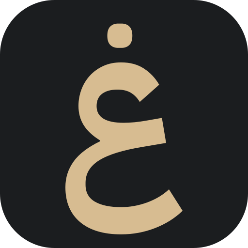
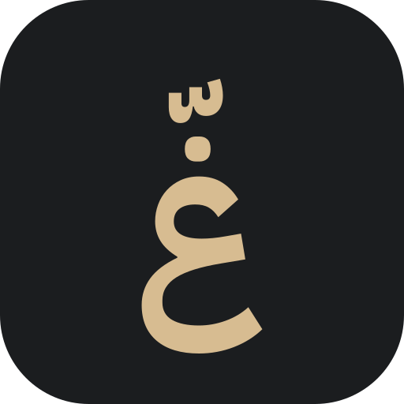

Review-only comparison — the live favicon and install icon are unchanged
(still /brand/favicon.svg, /brand/favicon-16.png, /brand/favicon-32.png,
/brand/apple-touch-icon.png). Both mockups below reference the exact, already-verified Phase 1B
SVG files byte-for-byte (brand-v3/icon-refinement-1b/*.svg) — nothing was redrawn or reshaped for
this page. Nothing here is wired into index.html or any live asset.
The isolated ش glyph — all three dots are part of the shaped glyph itself. No simplified variant is needed at any size; legible natively at 16px.
Same glyph cluster as the current live icon (غ with the authentic U+0651 shadda, GPOS-positioned by the font). The shadda stays legible at 64px+; at 16/32px it breaks down, so a simplified (shadda-dropped) variant is used at those two sizes only — the same tested tradeoff from Phase 1B, not a new decision made here.

شغّيل — V0.9
شغّيل